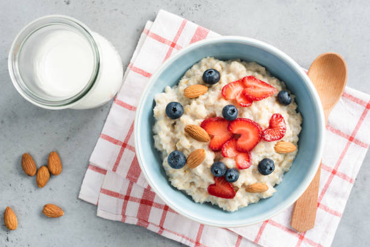

Oats

Description
Oatmeal is a warm, hearty breakfast that’s packed with fiber and can be customized to suit any taste. This classic oatmeal recipe is simple, nutritious, and can be adapted with various toppings for endless breakfast possibilities.
Ingredients
- 1 cup rolled oats (old-fashioned or quick oats)
- 2 cups water or milk (for a creamier texture, use milk or a milk alternative like almond or oat milk)
- A pinch of salt
- Sweetener to taste (optional: honey, maple syrup, or brown sugar)
Steps
- In a medium saucepan, bring the water or milk to a gentle boil over medium-high heat.
- Add a pinch of salt and stir in the rolled oats.
- Reduce the heat to low and let the oats simmer, stirring occasionally to prevent sticking. Cook for 5-7 minutes if using old-fashioned oats, or 2-3 minutes for quick oats, until the oats have absorbed most of the liquid and reached a creamy consistency.
- Remove the saucepan from heat and let the oatmeal sit for a minute to thicken.
- Sweeten with your preferred sweetener if desired, and stir well.